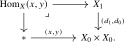
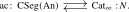
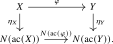

This section characterizes the nerves of \(\infty \)-categories among simplicial animae by the Segal and Rezk conditions. We begin with the motivating example:
Definition 24.1.1 (Nerve). The nerve of an \(\infty \)-category \(C\) is the simplicial anima \(N(C) \colon \simp \catop \to \An \) defined by \(N(C)_n := \Map ([n],C)\), i.e. as the composite \[ \simp \catop \hookrightarrow \Cat \catop \hookrightarrow \Cat _{\infty }\catop \xrightarrow {\Hom _{\Cat _{\infty }}(-,C)} \An . \] This construction is functorial in \(C\) and thus defines a functor \(N\colon \Cat _{\infty } \to \sAn \).
We may think of points of \(\Map ([n],C)\) as ‘strings of \(n\) composable morphisms in \(C\)’:
- For \(n = 0\), \(\Map ([0],C) = \Fun (*,C)^{\simeq } \simeq C^{\simeq }\) is just the groupoid core of \(C\);
- For \(n = 1\), \(\Map ([1],C)\) is the anima of morphisms in \(C\);
- For \(n = 2\), \(\Map ([2],C)\) is the anima of commutative triangles in \(C\), which by the Segal axiom, Proposition 1.4.5, is equivalent to \(\Map ([1],C) \times _{C^{\simeq }} \Map ([1],C)\);
- More generally, the ‘higher version’ of the Segal condition inductively implies that for every \(n \geq 0\) we have \[ \Map ([n],C) \iso \Map ([1],C) \times _{C^{\simeq }} \Map ([1],C) \times _{C^{\simeq }} \dots \times _{C^{\simeq }} \Map ([1],C) \] for all \(n\).
Note that all the relevant information of \(C\) is captured by its nerve: the objects are captured by the anima \(N(C)_0 = C^{\simeq }\), the hom animae \(\Hom _C(x,y)\) may be recovered as the fiber over \((x,y)\) of the map \((d_1,d_0)\colon N(C)_1 \to N(C)_0 \times N(C)_0\), and composition in \(C\) is captured by \(N(C)_2\). It thus seems plausible that \(C\) may be recovered from \(N(C)\). We will prove below that this is indeed the case, after introducing the relevant terminology.
Most of the basic aspects of an \(\infty \)-category \(C\), like its composition of morphisms and its definition of isomorphisms, can more generally be phrased in terms of simplicial animae. We will now spell out the details.
Definition 24.1.2 (Segal anima). A simplicial anima \(X\colon \simp \catop \to \An \) is called a Segal anima if the Segal condition is satisfied: For every \(n \geq 1\), the inclusion maps \(e_i\colon [1] \cong \{i- 1\leq i \} \hookrightarrow [n]\) induce an isomorphism of animae \[ (e_1^*, \dots , e_n^*)\colon X_n \iso X_1 \times _{X_0} X_1 \times _{X_0} \dots \times _{X_0} X_1. \] We write \(\Seg (\An ) \subseteq \sAn = \Fun (\simp \catop ,\An )\) for the full subcategory of Segal animae.
The nerve \(N(C)\) of an \(\infty \)-category \(C\) is always a Segal anima. A direct verification from the axioms is requested in Chapterexercise 24.2.
One may show, just like we did for \(\infty \)-categories in Section 1.4.2, that a Segal anima \(X\) comes equipped with a composition map \[ - \circ -\colon X_1 \times _{X_0} X_1 \simeq X_2 \xrightarrow {d_1} X_1 \] and that composition is unital and associative.
Convention 24.1.3. Given a Segal anima \(X\), we refer to \(0\)-simplices \(x \in X_0\) as objects of \(X\), and to 1-simplices \(f\in X_1\) as morphisms of \(X\). We use the notation \(f\colon x \to y\) when \(d_1(f) \simeq x\) and \(d_0(f) \simeq y\). Given objects \(x,y \in X_0\), we define the hom anima in \(X\) as the following pullback:

We will sometimes refer to 2-simplices as homotopies.
Definition 24.1.4 (Dwyer-Kan equivalences). A morphism \(f\colon X \to Y\) of Segal animae is called a Dwyer-Kan equivalence if the following two conditions are satisfied:
- (1)
-
(Essential surjectivity): For every object \(y \in Y_0\) there exists an object \(x \in X_0\) satisfying \(f(x) \cong y\) in \(Y_0\).
- (2)
-
(Fully faithfulness): For objects \(x,x' \in X_0\), the induced map \(f\colon \Hom _X(x,x') \to \Hom _Y(fx, fx')\) is an equivalence of animae.
Remark 24.1.5. Note that a functor \(F\colon C \to D\) between \(\infty \)-categories is essentially surjective (resp. fully faithful) precisely if the induced map on nerves \(N(F)\colon N(C) \to N(D)\) is essentially surjective (resp. fully faithful). In particular, \(F\) is an equivalence if and only if \(N(F)\) is a Dwyer-Kan equivalence.
Definition 24.1.6. Let \(X \in \Seg (\An )\) be a Segal anima. A morphism \(f\colon x \to y\) in \(X\) is called an isomorphism if there exist \(2\)-simplices \(\sigma , \tau \in X_2\) satisfying the relations \(d_0(\sigma ) \simeq f\), \(d_1(\sigma ) \simeq \id _x\), \(d_2(\tau ) \simeq f\) and \(d_1(\tau ) \simeq \id _y\). In other words: \(f\) is an isomorphism if there exist morphisms \(g,h\colon y \to x\) together with homotopies \(gf \simeq \id _x\) and \(fg \simeq \id _y\).
We write \(X_1^{\sim } \subseteq X_1\) for the full subanima spanned by the isomorphisms.
Definition 24.1.7 (Complete Segal anima, Rezk (2001)). A Segal anima \(X\colon \simp \catop \to \An \) is called complete, or is said to satisfy the Rezk condition, if the map \[ X_0 \to X_1^{\sim }, \quad x \mapsto \id _x \] is an equivalence of animae. We denote the full subcategory of complete Segal animae by \(\CSeg (\An ) \subseteq \Seg (\An )\).
The nerve \(N(C)\) of an \(\infty \)-category is complete. In particular, the nerve functor \(N\colon \Cat _{\infty } \to \sAn \) factors through \(\CSeg (\An ) \subseteq \sAn \). This assertion is also included in Chapterexercise 24.2.
Lemma 24.1.8 ([Hebestreit and Steinebrunner (2023), Lemma 2.3]). Let \(\phi \colon X \to Y\) be a morphism of complete Segal animae. Then \(\phi \) is an equivalence if and only if it is a Dwyer-Kan equivalence.
Proof. See Reference ? of [Cisinski et al. (2026)]. □
Recall from Construction 1.8.11 the associated \(\infty \)-category functor \[ \ac \colon \sAn \to \Cat _{\infty }, \] which is the colimit-preserving extension of the inclusion \(\simp \hookrightarrow \Cat _{\infty }\). By Reference ? of [Cisinski et al. (2026)], this functor is left adjoint to the nerve functor: \[ \ac \colon \sAn \rightleftarrows \Cat _{\infty }\noloc N. \]
Since the functor \(\ac \) is defined in terms of left Kan extensions, the pointwise formula from Theorem 21.4.3 allows us to compute it in terms of colimits in \(\Cat _{\infty }\), which in turn admit an explicit description by Proposition 23.5.2. The resulting expression can then be simplified somewhat further to obtain a concrete expression for \(\ac (X)\) as a certain localization, as explained in [Hebestreit and Steinebrunner (2023), Corollary 3.8]. This explicit expression can then be used to prove the following important result:
Proposition 24.1.9 (Hebestreit and Steinebrunner (2023), Corollary 3.15, Lemma 4.1). For every Segal anima \(X\), the unit map \(\eta \colon X \to N(\ac (X))\) is a Dwyer-Kan equivalence.
We refer to [Hebestreit and Steinebrunner (2023)] for the details of the argument. Together with the results above, this supplies the main theorem of the section.
Theorem 24.1.10 ([Joyal and Tierney (2007), Section 4], [Lurie (2009), Corollary 4.3.16], [Hebestreit and Steinebrunner (2023)]). The nerve functor \[ N\colon \Cat _{\infty } \hookrightarrow \sAn \] is fully faithful. Its image consists of the complete Segal animae. In particular, the nerve functor induces an equivalence \[ N\colon \Cat _{\infty } \iso \CSeg (\An ) \] between \(\Cat _{\infty }\) and the \(\infty \)-category of complete Segal animae.
Proof. Since the nerve functor lands in \(\CSeg (\An )\), the adjunction \(\ac \dashv N\) induces an adjunction

We have to show that both the unit and the counit are equivalences. For the unit, let \(X\) be a complete Segal anima. The unit map \(\eta \colon X \to N(\ac (X))\) is a Dwyer-Kan equivalence by Proposition 24.1.9 and thus an equivalence by Lemma 24.1.8, since both sides are complete Segal animae. For the counit, let \(C\) be an \(\infty \)-category. To show that \(\varepsilon \colon \ac (N(C)) \to C\) is an equivalence, it suffices by Remark 24.1.5 to show that \(N(\varepsilon ) \colon N(\ac (N(C))) \to N(C)\) is an equivalence. But this is a consequence of the triangle identity and the fact that \(\eta _{N(C)}\colon N(C) \to N(\ac (N(C)))\) is an equivalence. □
Corollary 24.1.11. The associated category functor \(\ac \colon \Seg (\An ) \to \Cat _{\infty }\) is a Bousfield localization. A morphism \(\phi \colon X \to Y\) of Segal animae is inverted by \(\ac (-)\) if and only if it is a Dwyer-Kan equivalence.
Proof. The first statement is a consequence of the full faithfulness of the nerve functor \(N\colon \Cat _{\infty } \hookrightarrow \Seg (\An )\) from Theorem 24.1.10. For the second statement, consider the following commutative square:

The vertical morphisms are Dwyer-Kan equivalences by Proposition 24.1.9. Since Dwyer-Kan equivalences satisfy the two-out-of-three property by Reference ?, it follows that \(\phi \) is a Dwyer-Kan equivalence if and only if \(N(\ac (\phi ))\) is. By Remark 24.1.5, the latter holds if and only if \(\ac (\phi )\colon \ac (X) \to \ac (Y)\) is an equivalence. □
Corollary 24.1.12. The inclusions \(\CSeg (\An ) \hookrightarrow \sAn \) and \(\CSeg (\An ) \hookrightarrow \Seg (\An )\) admit left adjoints given by \(X \mapsto N(\ac (X))\).
Proof. Given a complete Segal anima \(Y\), we have \begin {align*} \Hom _{\CSeg (\An )}(N(\ac (X)),Y) &\simeq \Hom _{\Cat _{\infty }}(\ac (X),\ac (Y)) \\ &\simeq \Hom _{\sAn }(X,N(\ac (Y))) \\ &\simeq \Hom _{\sAn }(X,Y), \end {align*}
where the first isomorphism holds by the equivalence \(\Cat _{\infty } \simeq \CSeg (\An )\), the second comes from the adjunction \(\ac \dashv N\), and the third is induced by \(Y \iso N(\ac (Y))\). This proves the assertion for the inclusion into \(\sAn \); restricting to the full subcategory \(\Seg (\An ) \subseteq \sAn \) proves it for the second inclusion as well. □
Notation 24.1.13. The left adjoint to \(\CSeg (\An ) \hookrightarrow \Seg (\An )\) is often called the completion functor or Rezk completion and is denoted by \[ \widehat {(-)}\colon \Seg (\An ) \to \CSeg (\An ). \]
The following is a useful consequence of the identification of \(\Cat _{\infty }\) with the \(\infty \)-category of complete Segal animae:
Proposition 24.1.14. The \(\infty \)-category \(\Cat _{\infty }\) is generated under colimits by \([0]\) and \([1]\).
Proof. The presheaf category \(\sAn = \Fun (\simp \catop ,\An )\) is generated by the representable presheaves under colimits by Theorem 1.8.9. It follows that \(\Cat _{\infty }\) is generated under colimits by their images under the localization functor \(\ac \colon \sAn \to \Cat _{\infty }\), which are the posets \([n]\). The claim now follows, since the Segal condition shows that each \([n]\) is an iterated pushout of copies of \([1]\) along \([0]\). □
Generated from the authoritative LaTeX source.